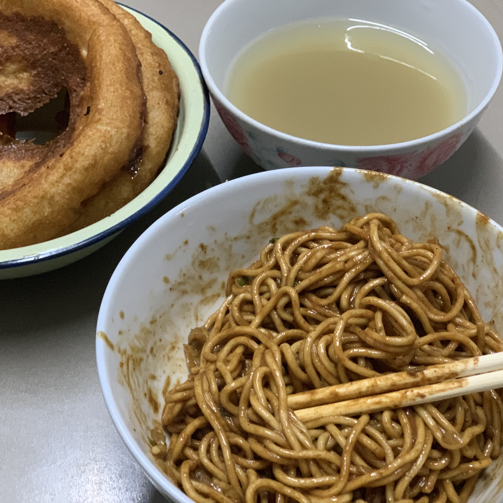
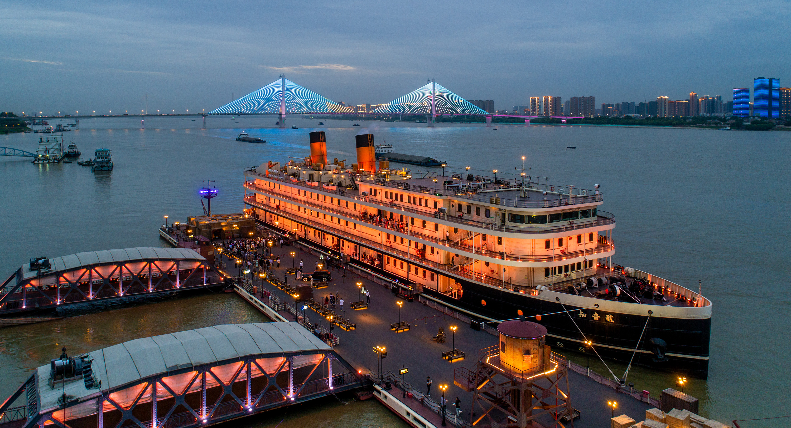
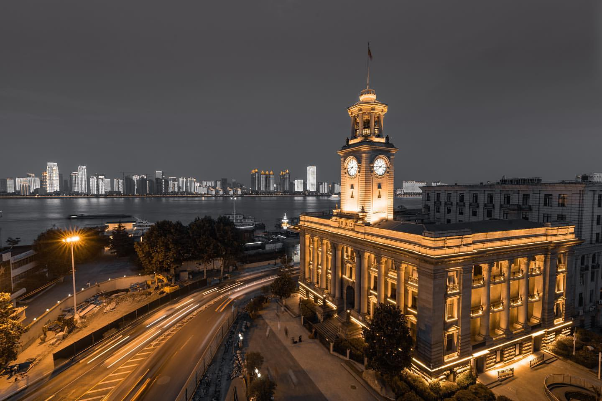
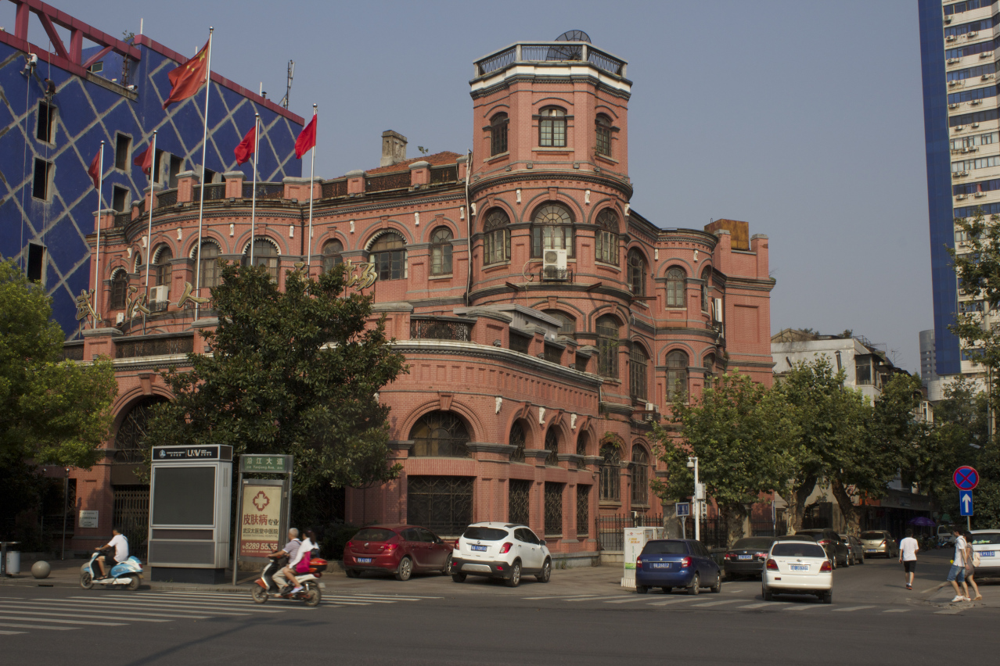
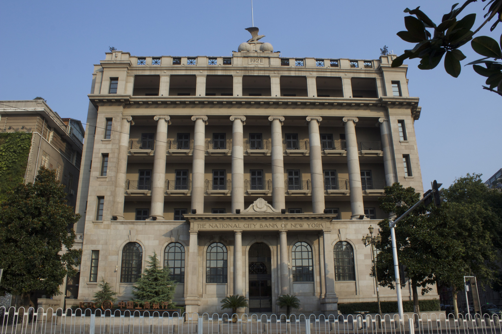
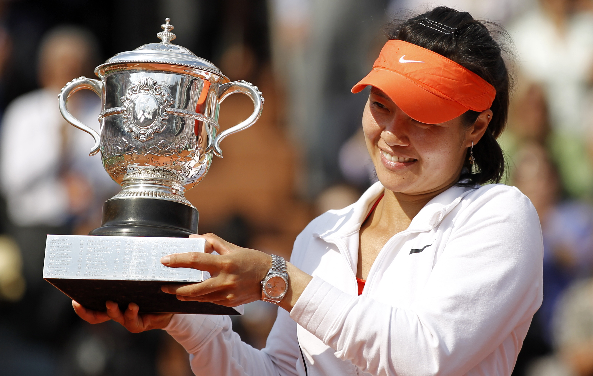

My hometown Wuhan is a beautiful city in central China.
It's a huge metropolis located on the Yangtze River's intersection with the Han river.
The proudest history event of Wuhan is the 1911 Wuchang Uprising. This rebellion successfully overthrew the five thousands years of Chinese imperial rule system and established a republic government.
Know more about WUHAN from Wikipedia
The city is divided by rivers and lakes, there are many bridges in the city.
City Symbol: The first bridge ever built across the Yangtze
Traditional Breakfest: Salty doughnut, Mung bean soup, and Hot Dry Noodles(noodles with sesame sauce)
Zhiyin Cruise
The loss of the Second Opium War (known in the West as the Arrow War, 1856–1860), the UK forces China to stipulated Wuhan as trading ports. The first concession in Wuhan, the British concession, opened in the spring of 1861. Later, four more concessions were added (French, Russian, German, and Japanese). The colonial buildings in the concessions mark the shame colonial time in the past and exotic atmosphere in this Chinese city.
Hankow Customs House(1924) | Renaissance style
Former American Consulate(1905) | Baroque style
Old Citibank Building(1921) | Classical style
The first Grand Slam singles champion from Asia. She is the winner of the 2011 French Open and 2014 Australia Open.
Li Na in 2011 French Open
A famous American actress born in Wuhan. She played Mulan in live-action Mulan movie.
Yifei for Harper's BAZAAR China April 2016
A super handsome and famous actor in China.
Wang Kai for Esquire China April 2018